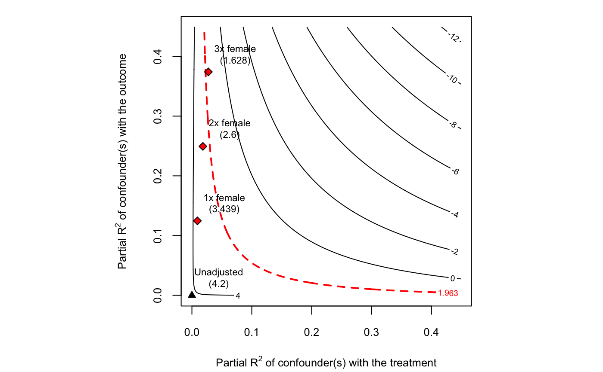
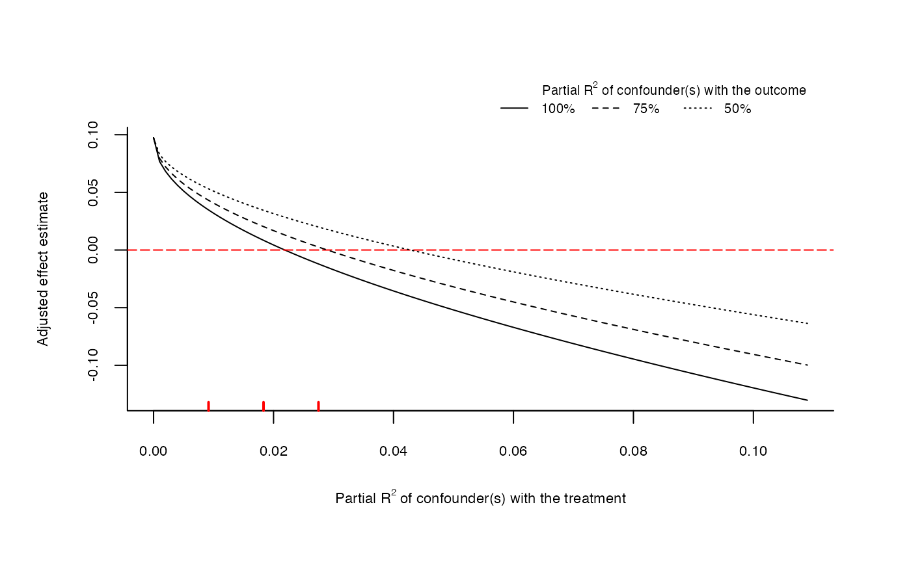
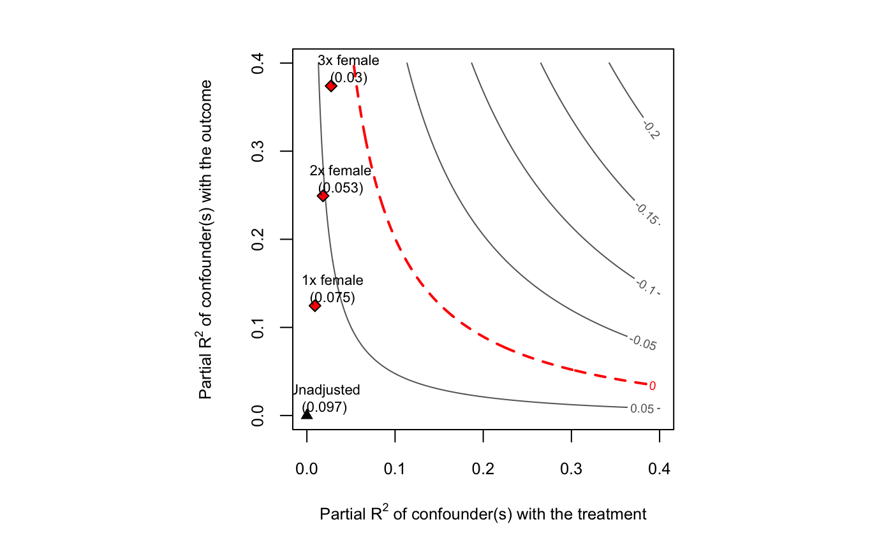
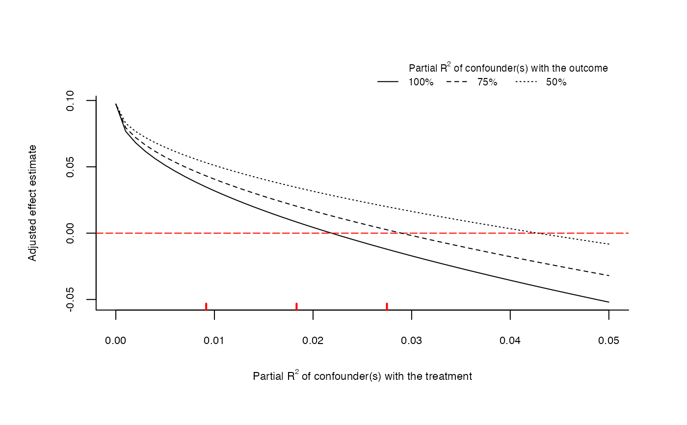

The sensemakr package implements a suite of sensitivity analysis tools that makes it easier to understand the impact of omitted variables in linear regression models, as discussed in Cinelli and Hazlett (2020).
Details
The main function of the package is sensemakr, which computes the most common sensitivity analysis results.
After running sensemakr you may directly use the plot and print methods in the returned object.
You may also use the other sensitivity functions of the package directly, such as the functions for sensitivity plots
(ovb_contour_plot, ovb_extreme_plot) the functions for computing bias-adjusted estimates and t-values (adjusted_estimate, adjusted_t),
the functions for computing the robustness value and partial R2 (robustness_value, partial_r2), or the functions for bounding the strength
of unobserved confounders (ovb_bounds), among others.
More information can be found on the help documentation, vignettes and related papers.
References
Cinelli, C. and Hazlett, C. (2020), "Making Sense of Sensitivity: Extending Omitted Variable Bias." Journal of the Royal Statistical Society, Series B (Statistical Methodology).
Examples
# loads dataset data("darfur") # runs regression model model <- lm(peacefactor ~ directlyharmed + age + farmer_dar + herder_dar + pastvoted + hhsize_darfur + female + village, data = darfur) # runs sensemakr for sensitivity analysis sensitivity <- sensemakr(model, treatment = "directlyharmed", benchmark_covariates = "female", kd = 1:3) # short description of results sensitivity#> Sensitivity Analysis to Unobserved Confounding #> #> Model Formula: peacefactor ~ directlyharmed + age + farmer_dar + herder_dar + #> pastvoted + hhsize_darfur + female + village #> #> Unadjusted Estimates of ' directlyharmed ': #> Coef. estimate: 0.09732 #> Standard Error: 0.02326 #> t-value: 4.18445 #> #> Sensitivity Statistics: #> Partial R2 of treatment with outcome: 0.02187 #> Robustness Value, q = 1 : 0.13878 #> Robustness Value, q = 1 alpha = 0.05 : 0.07626 #> #> For more information, check summary.#> Sensitivity Analysis to Unobserved Confounding #> #> Model Formula: peacefactor ~ directlyharmed + age + farmer_dar + herder_dar + #> pastvoted + hhsize_darfur + female + village #> #> Unadjusted Estimates of 'directlyharmed': #> Coef. estimate: 0.0973 #> Standard Error: 0.0233 #> t-value: 4.1844 #> #> Sensitivity Statistics: #> Partial R2 of treatment with outcome: 0.0219 #> Robustness Value, q = 1: 0.1388 #> Robustness Value, q = 1, alpha = 0.05: 0.0763 #> #> Verbal interpretation of sensitivity statistics: #> #> -- Partial R2 of the treatment with the outcome: an extreme confounder (orthogonal to the covariates) that explains 100% of the residual variance of the outcome, would need to explain at least 2.19% of the residual variance of the treatment to fully account for the observed estimated effect. #> #> -- Robustness Value, q = 1: unobserved confounders (orthogonal to the covariates) that explain more than 13.88% of the residual variance of both the treatment and the outcome are strong enough to bring the point estimate to 0 (a bias of 100% of the original estimate). Conversely, unobserved confounders that do not explain more than 13.88% of the residual variance of both the treatment and the outcome are not strong enough to bring the point estimate to 0. #> #> -- Robustness Value, q = 1, alpha = 0.05: unobserved confounders (orthogonal to the covariates) that explain more than 7.63% of the residual variance of both the treatment and the outcome are strong enough to bring the estimate to a range where it is no longer 'statistically different' from 0 (a bias of 100% of the original estimate), at the significance level of alpha = 0.05. Conversely, unobserved confounders that do not explain more than 7.63% of the residual variance of both the treatment and the outcome are not strong enough to bring the estimate to a range where it is no longer 'statistically different' from 0, at the significance level of alpha = 0.05. #> #> Bounds on omitted variable bias: #> Bound Label R2dz.x R2yz.dx Adjusted Estimate Adjusted Se Adjusted T #> 1x female 0.0092 0.1246 0.0752 0.0219 3.4389 #> 2x female 0.0183 0.2493 0.0529 0.0204 2.6002 #> 3x female 0.0275 0.3741 0.0304 0.0187 1.6281 #> Adjusted Lower CI Adjusted Upper CI #> 0.0323 0.1182 #> 0.0130 0.0929 #> -0.0063 0.0670#> \begin{table}[!h] #> \centering #> \begin{tabular}{lrrrrrr} #> \multicolumn{7}{c}{Outcome: \textit{peacefactor}} \\ #> \hline \hline #> Treatment: & Est. & S.E. & t-value & $R^2_{Y \sim D |{\bf X}}$ & $RV_{q = 1}$ & $RV_{q = 1, \alpha = 0.05}$ \\ #> \hline #> \textit{directlyharmed} & 0.097 & 0.023 & 4.184 & 2.2\% & 13.9\% & 7.6\% \\ #> \hline #> df = 783 & & \multicolumn{5}{r}{ \small \textit{Bound (1x female)}: $R^2_{Y\sim Z| {\bf X}, D}$ = 12.5\%, $R^2_{D\sim Z| {\bf X} }$ = 0.9\%} \\ #> \end{tabular} #> \end{table}# data.frame with sensitivity statistics sensitivity$sensitivity_stats#> treatment estimate se t_statistic r2yd.x rv_q #> 1 directlyharmed 0.09731582 0.02325654 4.18445 0.02187309 0.1387764 #> rv_qa f2yd.x dof #> 1 0.07625797 0.02236222 783# data.frame with bounds on the strengh of confounders sensitivity$bounds#> bound_label r2dz.x r2yz.dx adjusted_estimate adjusted_se adjusted_t #> 1 1x female 0.009164287 0.1246409 0.07522027 0.02187333 3.438904 #> 2 2x female 0.018328573 0.2493241 0.05291517 0.02035006 2.600246 #> 3 3x female 0.027492860 0.3740505 0.03039602 0.01867006 1.628062 #> adjusted_lower_CI adjusted_upper_CI #> 1 0.032282966 0.11815758 #> 2 0.012968035 0.09286231 #> 3 -0.006253282 0.06704533### Using sensitivity functions directly ### # robustness value of directly harmed q = 1 (reduce estimate to zero) robustness_value(model, covariates = "directlyharmed")#> directlyharmed #> 0.1387764 #> Parameters: q = 1# robustness value of directly harmed q = 1/2 (reduce estimate in half) robustness_value(model, covariates = "directlyharmed", q = 1/2)#> directlyharmed #> 0.07202698 #> Parameters: q = 0.5# robustness value of directly harmed q = 1/2, alpha = 0.05 robustness_value(model, covariates = "directlyharmed", q = 1/2, alpha = 0.05)#> directlyharmed #> 0.004562761 #> Parameters: q = 0.5, alpha = 0.05#> directlyharmed #> 0.02187309#> female #> 0.1090339#> treatment estimate se t_statistic r2yd.x rv_q #> 1 directlyharmed 0.09731582 0.02325654 4.18445 0.02187309 0.1387764 #> rv_qa f2yd.x dof #> 1 0.07625797 0.02236222 783# bounds on the strength of confounders using female and age ovb_bounds(model, treatment = "directlyharmed", benchmark_covariates = c("female", "age"), kd = 1:3)#> bound_label r2dz.x r2yz.dx adjusted_estimate adjusted_se adjusted_t #> 1 1x female 0.009164287 0.124640923 0.07522027 0.02187333 3.438904 #> 2 2x female 0.018328573 0.249324064 0.05291517 0.02035006 2.600246 #> 3 3x female 0.027492860 0.374050471 0.03039602 0.01867006 1.628062 #> 4 1x age 0.001117013 0.008107259 0.09535637 0.02318983 4.111990 #> 5 2x age 0.002234026 0.016214559 0.09339472 0.02310779 4.041698 #> 6 3x age 0.003351038 0.024321900 0.09143086 0.02302527 3.970892 #> adjusted_lower_CI adjusted_upper_CI #> 1 0.032282966 0.11815758 #> 2 0.012968035 0.09286231 #> 3 -0.006253282 0.06704533 #> 4 0.049834764 0.14087797 #> 5 0.048034163 0.13875527 #> 6 0.046232296 0.13662943# adjusted estimate given hypothetical strength of confounder adjusted_estimate(model, treatment = "directlyharmed", r2dz.x = 0.1, r2yz.dx = 0.1)#> directlyharmed #> 0.02871889# adjusted t-value given hypothetical strength of confounder adjusted_t(model, treatment = "directlyharmed", r2dz.x = 0.1, r2yz.dx = 0.1)#> directlyharmed #> 1.234085# bias contour plot directly from lm model ovb_contour_plot(model, treatment = "directlyharmed", benchmark_covariates = "female", kd = 1:3)# extreme scenario plot directly from lm model ovb_extreme_plot(model, treatment = "directlyharmed", benchmark_covariates = "female", kd = 1:3, lim = 0.05)